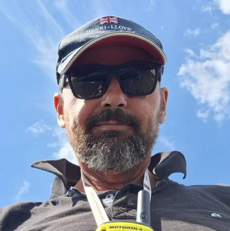

Zajęcia indywidualne to szkolenie skrojone pod konkretną osobę – jej tempo, cele i poziom zaawansowania. Instruktor skupia się wyłącznie na jednym uczestniku, co pozwala szybciej wyeliminować błędy i utrwalić prawidłowe nawyki. Program ustalany jest wspólnie przed pierwszym wyjściem na wodę.
Zajęcia odbywają się na jednym z trzech jezior małopolskich: Rożnowskim, Mucharskim lub Czorsztyńskim. Sprawdzają się zarówno jako przygotowanie do egzaminu PZŻ, doskonalenie manewrów, jak i swobodne żeglowanie pod okiem doświadczonego instruktora.

Kierownik Wykształcenia Żeglarskiego z 25-letnim stażem. Wychował tysiące żeglarzy na małopolskich jeziorach. Wymagający i pełen humoru.
| Uprawnienia Instruktor Polskiego Związku Żeglarskiego |
Języki Polski, Angielski |
4+ h
1
400 zł
Dzień 1–2 – Teoria: Przepisy żeglugowe, budowa jachtu, podstawowe węzły, meteorologia, przepisy bezpieczeństwa na wodzie, znaki żeglugowe.
Dzień 2–5 – Praktyka na wodzie: Obsługa żagli, manewry portowe (cumowanie, odcumowanie), halsowanie, zwrot przez sztag i przez rufę, żeglowanie na różnych kursach, MOB (człowiek za burtą), procedury bezpieczeństwa.
Dzień 5–6 – Szlifowanie: Samodzielna obsługa jachtu pod nadzorem instruktora, planowanie trasy, rejs po jeziorze z nawigacją.
Dzień 7 – Egzamin: Egzamin teoretyczny i praktyczny PZŻ. Wieczorne ognisko – świętujemy patenty!
J. Rożnowskie / Mucharskie / Czorsztyńskie
Dla każdego
Od 14 lat (poniżej 18 – zgoda rodziców)
Jachty klasy Tango 780, Tes
Sprzęt, ratownik, ognisko, kolacja, materiały szkoleniowe
Opłata egzaminacyjna około 100 zł (płatna osobno)
Jachty, kamizelki asekuracyjne, deski windsurfingowe
Certyfikowany instruktor PZŻ przez cały kurs
Obecny podczas wszystkich zajęć na wodzie
Podręcznik, materiały szkoleniowe, notatki
Każdego wieczoru przy brzegu jeziora
| Uczestnicy | Termin | Akwen |
|---|---|---|
| 2 wolne miejsca | 09–15 czerwca 2025 | J. Czorsztyńskie |
| 4 wolne miejsca | 21–27 czerwca 2025 | J. Mucharskie |
| 6 wolnych miejsc | 07–13 lipca 2025 | J. Rożnowskie |
| 5 wolnych miejsc | 21–27 lipca 2025 | J. Czorsztyńskie |
| 8 wolnych miejsc | 04–10 sierpnia 2025 | J. Mucharskie |